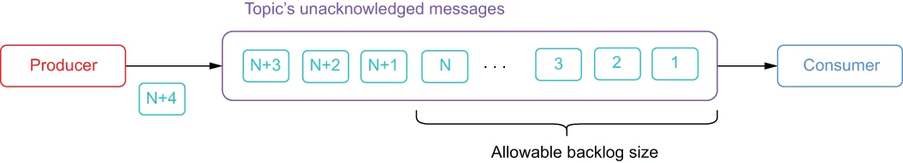

Backlog is the term used for all the unacknowledged messages in a topic that must be stored on bookies until they are delivered to all the intended recipients. By default, Pulsar retains all unacknowledged messages indefinitely. However, Pulsar supports namespace-level backlog quota policies that allow you to override this behavior to reduce the space consumed by these unacknowledged messages in situations where one or more of the consumers goes offline for an extended period due to a system crash.
积压（backlog）这个术语指的是主题中所有未被确认的消息；在被投递给所有预期的接收方之前，它们必须存储在 bookie 上。默认情况下，Pulsar 会无限期地保留所有未被确认的消息。不过，Pulsar 支持命名空间级别的积压配额策略，使你能够覆盖这一行为，以便在某个或多个消费者因系统崩溃而长时间离线的情况下，减少这些未确认消息所占用的空间。
These backlog quotas are designed to solve a very specific situation in which the topic producers have sent more messages than the consumer can possibly process without falling even further behind. Under these circumstances, you would want to prevent the consumer from getting so far behind that it will never catch up. When this situation occurs, you need to consider the timeliness of the data that the consumer is processing and ensure that the consumer abandons older, less-recent data in favor of more recent messages that can still be processed within the agreed upon SLA. If the data in your topic becomes “stale” by sitting there for an extended period, then implementing a backlog quota will help you focus your processing efforts on only the more recent data by limiting the size of the backlog.
这些积压配额是为解决一个非常特定的场景而设计的：主题的生产者发送的消息数量，已经超过了消费者在不进一步落后的情况下所能处理的极限。在这种情况下，你会希望避免消费者落后太多以致永远也追不上。当这种情况发生时，你需要考虑消费者正在处理的数据的时效性，并确保消费者放弃较旧、较不新的数据，转而处理那些仍能在约定的 SLA 之内被处理的较新消息。如果你的主题中的数据因为长时间搁置而变得"陈旧"，那么实施积压配额可以通过限制积压的规模，帮助你把处理精力集中在较新的数据上。

Figure 2.17 Pulsar’s backlog quota allows you to dictate what action the broker should take when the volume of unacknowledged messages exceeds a certain size. This prevents the backlog from growing so large that the consumer is processing data that is of little or no value.
图 2.17 Pulsar 的积压配额让你可以指定：当未确认消息的数量超过某个规模时，broker 应当采取什么动作。这可以防止积压增长得过大，以至于消费者在处理几乎没有价值的数据。
Unlike the message retention policies I discussed in the previous section, which are intended to extend the lifespan of acknowledged messages inside a Pulsar topic, these backlog quota policies are designed to reduce the lifespan of unacknowledged messages.
与我在上一节中讨论的消息保留策略不同——后者旨在延长 Pulsar 主题中已确认消息的生命周期，这些积压配额策略旨在缩短未确认消息的生命周期。
You can limit the allowable size of these message backlogs by configuring a backlog policy that specifies the maximum allowable size of the topic backlog and the action to take when this threshold is exceeded, as shown in figure 2.17. There are three distinct options for the backlog retention policy, which dictate the behavior the broker should take to alleviate the condition:
你可以通过配置一条积压策略来限制这些消息积压的允许规模，该策略指定了主题积压的最大允许规模，以及在超过该阈值时要采取的动作，如图 2.17 所示。积压保留策略有三种不同的选项，它们决定了 broker 为缓解该状况所应采取的行为：
通过指定 producer_request_hold 保留策略，broker 可以拒绝传入的消息：向生产者发送一个异常，以表明它们应当暂缓发送新消息。
与请求生产者暂缓不同，当指定了 producer_exception 策略时，broker 会强制断开所有现存的生产者。
如果你希望 broker 丢弃主题中现有的、未被确认的消息，那么应该指定 consumer_backlog_eviction 策略。
Each of these provide you with three very different approaches to handling the situation shown in figure 2.17. The first one, producer_request_hold, would leave the producer connected but throw an exception to slow it down. This policy would be applicable in a scenario where you want the client application to catch the thrown exception and resend the message at a later point. So, it would be best to use this policy when you don’t want to reject any messages sent from the consumer, and the clients will buffer the rejected messages for a period of time before resending them.
这三种策略为你提供了处理图 2.17 所示状况的三种截然不同的方式。第一种是 producer_request_hold：它会让生产者保持连接，但抛出一个异常来使其放慢速度。这条策略适用于这样的场景：你希望客户端应用捕获被抛出的异常，并在稍后重新发送该消息。因此，当你不想拒绝来自消费者的任何消息，并且客户端会把被拒绝的消息缓冲一段时间后再重发时，最好使用这条策略。
The second policy, producer_exception, would forcibly disconnect the producer entirely, which would stop the messages from getting published and would require the producer code to detect this condition and reconnect. With this policy there is the distinct possibility of losing messages sent from the client producers during the period they are disconnected. This policy is best used when you know the producers aren’t capable of buffering messages (e.g., they are running inside a resource-constrained environment, such as an IoT device), and you don’t want Pulsar’s inability to receive messages to cause the client application to crash.
第二种策略 producer_exception 会把整个生产者强制断开，这将阻止消息被继续发布，并要求生产者代码检测到这一状况并重新连接。采用这条策略时，在客户端生产者断开连接的那段时间里，存在丢失其已发出消息的明显可能。当你知道生产者不具备缓冲消息的能力（例如它们运行在资源受限的环境中，如物联网设备），并且你不希望 Pulsar 无法接收消息这一点导致客户端应用崩溃时，最好使用这条策略。
The last policy, consumer_backlog_eviction, does not impact the functionality of the producer whatsoever, and it will continue to produce messages at the current rate. However, older messages that haven’t been consumed will be discarded, resulting in message loss.
最后一种策略 consumer_backlog_eviction 完全不影响生产者的功能，它会继续以当前的速率生产消息。不过，那些尚未被消费的较旧消息将被丢弃，从而导致消息丢失。